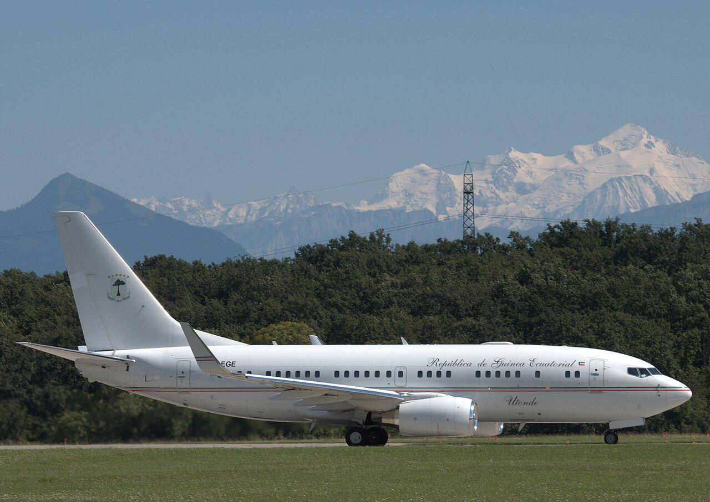

Экваториальная Гвинея — центральноафриканская страна, состоящая из континентальной части реки Муни и пяти вулканических островов у побережья. Столица Малабо расположена на острове Биоко и имеет испанский колониальный архитектурный стиль, а также является центром процветающей нефтяной промышленности страны. Пляж Арена Бланка имеет тенденцию привлекать бабочек в сухой сезон. В тропическом лесу национального парка Монте-Ален, в континентальной части, обитают гориллы, шимпанзе и слоны.
Правительство Экваториальной Гвинеи возглавляет президент Экваториальной Гвинеи Теодоро Обианг Нгема, находящийся у власти с 1979 года. Его вице-президентом является его сын Теодорин Нгема Обианг, а премьер-министром — Франсиско Паскуаль Обама Асуэ.
Совет министров Экваториальной Гвинеи состоит из членов Палаты депутатов, назначаемых Президентом и утверждаемых парламентариями Палаты.
Совет министров возглавляется президентом, и ему поручено управлять операциями правительства, составлять бюджет и определять денежно-кредитную политику.
